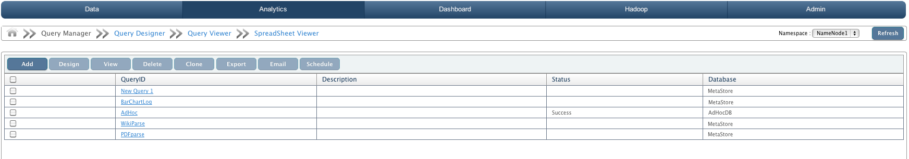

Hadoop Query Manager
In this chapter
This chapter explains about managing big queries based on metadata extracted.
Introduction
QueryIO supports on the fly metadata extraction from the files written onto the cluster. Query manager views all the saved big queries according to selected namespace.
You can easily manage and execute your saved big queries using Query Manager.

Following details about big queries are displayed:
- Check box to perform operations on Hadoop SQL query.
- QueryID: A unique id for the Hadoop SQL query.
- Description: Description for the Hadoop SQL query.
- Status: Status of query as "Success", "Failed" or "Running" based on execution of query.
- Database: Type of the database.
You can also select Namespace from a drop down list each one of which has its own big queries. Database linked to the namespace will be displayed.
Managing Hadoop SQL Queries
Following actions can be performed on saved Hadoop SQL Queries.
- Add
- To create a new Hadoop SQL query.
- Use Query Designer to design, save and execute new Hadoop SQL query.
- Design
- To redesign a Hadoop SQL query.
- Select a Hadoop SQL query and click "Design". This will take you to Query Designer with selected Hadoop SQL query details.
- View
- To view the result of selected Hadoop SQL query.
- Hadoop SQL query will viewed on Query Viewer
- Delete
- To delete selected Hadoop SQL query.
- Clone
- To create exact copy of a Hadoop SQL query.
- Select query to be cloned.
- Specify cloned query id and description and click "Save".
- New exact copy of selected query will be created.
- Export
- Select Hadoop SQL query and click "Export".
- In the window that will appear, specify query id and select the format(PDF, HTML, XLS) in which you want the report to be exported.
- Click Export.
- Email
- Select Hadoop SQL query and click "Email".
- Specify query name, select the format(PDF, HTML, XLS) in which you want the report to be emailed and specify record names.
- Select mail recipient from the list of registered users.
- Click Email.
- Schedule
- Execute Hadoop SQL query at scheduled time.
- Select Hadoop SQL query and click "Schedule".
- Specify schedule id, frequency interval, schedule time, select the format(PDF, HTML, XLS) in which you want the report of the Hadoop SQL query to be e-mailed.
- Provide message to be included in email.
- Select mail recipient from the list of registered users.
- Click Email.
Copyright © 2017 QueryIO Corporation. All Rights Reserved.
QueryIO, "Big Data Intelligence" and the QueryIO Logo are trademarks
of QueryIO Corporation. Apache, Hadoop and HDFS are trademarks of The Apache Software Foundation.